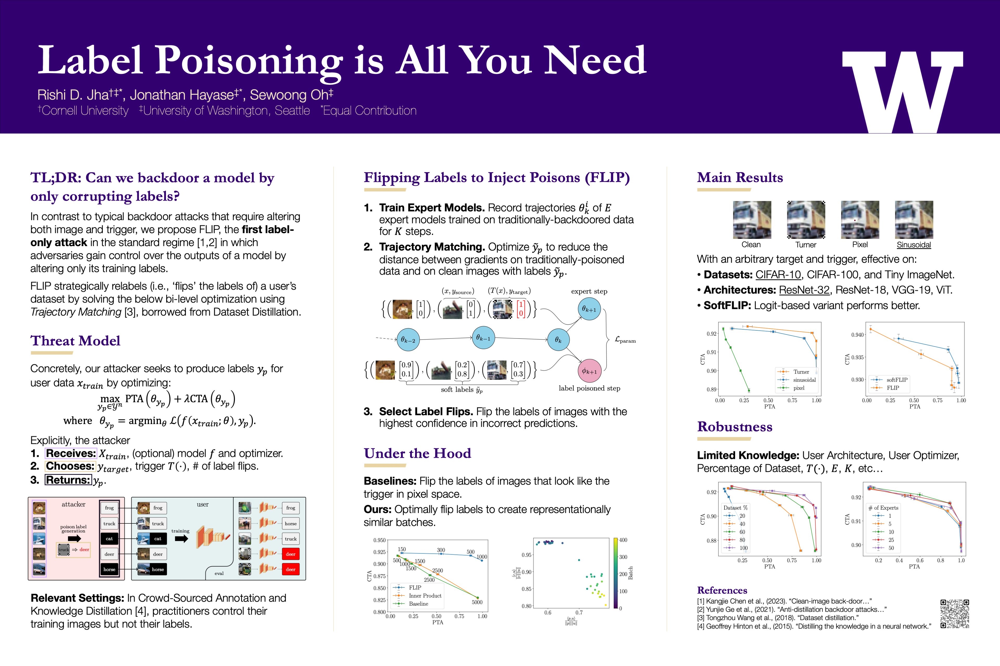

Label Poisoning is All You Need
• NeurIPS '23 | Rishi Jha, Jonathan Hayase, Sewoong Oh
• Master's Thesis | Rishi Jha
In a backdoor attack, an adversary injects corrupted data into a model's training dataset in order to gain control over its predictions on images with a specific attacker-defined trigger. A typical corrupted training example requires altering both the image, by applying the trigger, and the label. Models trained on clean images, therefore, were considered safe from backdoor attacks. However, in some common machine learning scenarios, the training labels are provided by potentially malicious third-parties. This includes crowd-sourced annotation and knowledge distillation. We, hence, investigate a fundamental question: can we launch a successful backdoor attack by only corrupting labels? We introduce a novel approach to design label-only backdoor attacks, which we call FLIP, and demonstrate its strengths on three datasets (CIFAR-10, CIFAR-100, and Tiny-ImageNet) and four architectures (ResNet-32, ResNet-18, VGG-19, and Vision Transformer). With only 2% of CIFAR-10 labels corrupted, FLIP achieves a near-perfect attack success rate of 99.4% while suffering only a 1.8% drop in the clean test accuracy. Our approach builds upon the recent advances in trajectory matching, originally introduced for dataset distillation.
